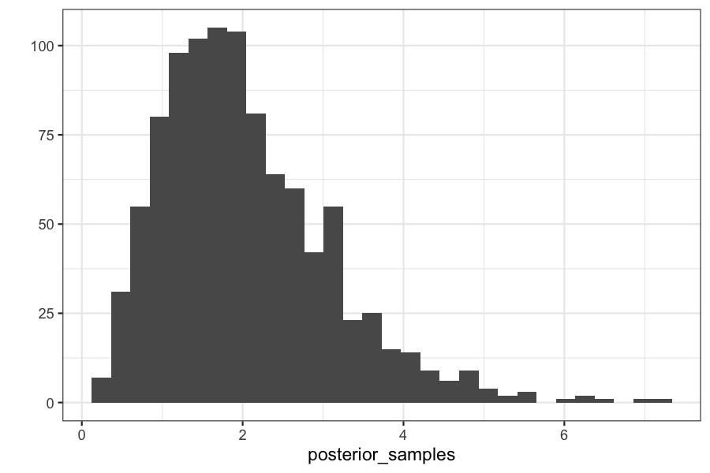
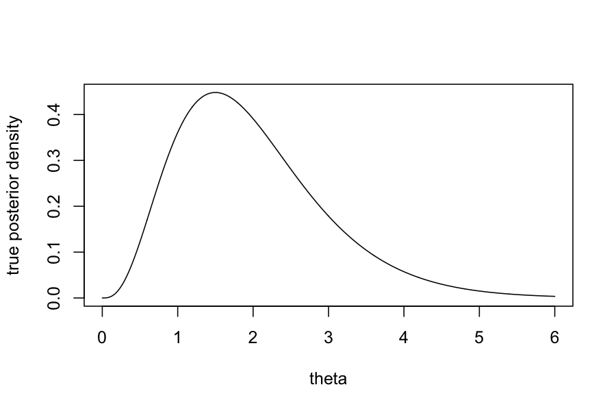
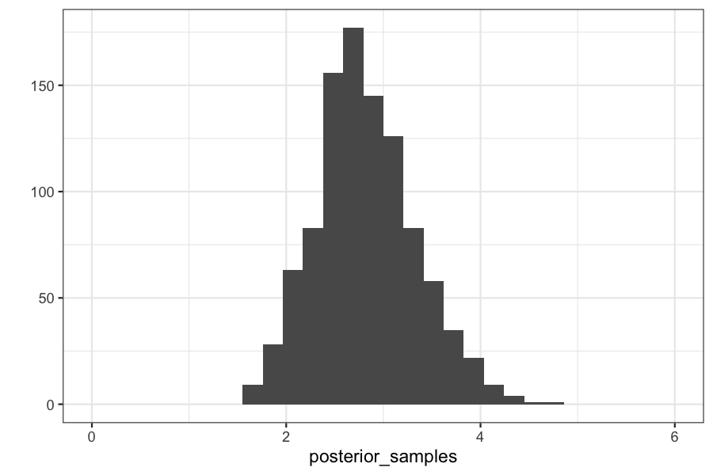

Today: Approximate Bayesian Computation
Reading:
Bayesian Basics, the introductory chapter
Sisson, Fan, Beaumont, “Overview of Approximate Bayesian Computation”
Next two weeks:
Methods for sampling from arbitrary probability distributions.
Main application: sampling from posterior distributions
Suppose we have data \(y_1,\ldots, y_n\) that we believe can be described by a probability model with parameters \(\theta\).
We also have a prior distribution on the parameters \(\theta\), describing our belief about the values of those parameters before seeing any of the data.
\[ \begin{align*} y_i \mid \theta &\sim P(y_i \mid \theta), \quad i = 1,\ldots, n\\ \theta & \sim \pi \end{align*} \]
For example:
Data \(y_i\) are heights of men entering the military
We think that the \(y_i\) are distributed \(\mathcal N(\theta, \sigma^2)\)
We have some prior belief about \(\theta\), maybe that it is around 70”.
We quantify our prior belief about \(\theta\) as \(\theta \sim \mathcal N(70, 5)\)
Once we have seen the actual heights, we can “update” our belief about \(\theta\) by computing the posterior distribution \(P(\theta \mid y_1,\ldots, y_n)\)
This posterior distribution is the Bayesian analog of a confidence interval for a normal mean.
Finance:
Data are historical stock prices.
Stock prices assumed to come from a probabilistic model with parameters having to do with the expected return of each stock and the correlations between them.
Given some prior on the expected returns and correlations, we can compute posterior distributions of the expected returns and correlations.
Epidemiology
Data are dates at which people are infected with a virus
Infection dates come from a probabilistic model of disease spread. Parameters in the model are transmission probabilities due to contact between individuals.
If we specify prior beliefs about the transmission probabilities, we can compute a posterior distribution on transmission probabilities.
By applying Bayes’ rule, we can compute the posterior distribution of the parameters given the data: \[ \begin{align*} P(\theta \mid y_1,\ldots, y_n) &= \frac{P(y_1,\ldots, y_n \mid \theta)P(\theta)}{P(y_1,\ldots, y_n)} \end{align*} \]
We want to know as much about this distribution as possible.
For simple cases it is available in closed form
For more complicated cases our best hope is to draw samples of it
From those samples we can compute posterior means, variances, etc. using the Monte Carlo methods from last two classes.
Inputs:
A target posterior: \(P(\theta \mid y_{\text{obs}}) \propto P(y_{\text{obs}} \mid \theta) P(\theta)\)
A way of simulating from \(P(y_{\text{obs}} \mid \theta)\)
A prior on the parameters \(P(\theta)\)
Sampling: for \(i = 1,\ldots, N\):
Generate \(\theta^{(i)} \sim P(\theta)\)
Generate \(y^{(i)} \sim P(y \mid \theta^{(i)})\)
If \(y^{(i)} = y_{\text{obs}}\), accept \(\theta^{(i)}\)
Why does this work?
Our draws \((\theta^{(i)}, y^{(i)})\) are samples from the joint distribution \(P(\theta, y)\)
Keeping only the values for which \(y^{(i)} = y_{\text{obs}}\) is the definition of conditioning on \(y_{\text{obs}}\).
Bayesian analysis for a Poisson random variable.
Model is: \[ \begin{align*} Y_i &\sim \text{Poisson}(\theta), \quad i = 1,\ldots, n \\ \theta &\sim \text{Gamma}(\alpha, \beta) \end{align*} \]
By Bayes rule, we can find in closed form that the posterior, \(P(\theta \mid Y_1, \ldots, Y_n)\) has a \(\text{Gamma}(\sum_{i=1}^n Y_i + \alpha, n + \beta)\) distribution.
Let’s pretend we can’t do that though, and try using ABC.
Set up the function:
Analysis for:
Prior distribution: \(\theta \sim \text{Gamma}(1, 1)\)
Likelihood: \(y \mid \theta \sim \text{Poisson}(\theta)\)
Observed data: \(y = 3\)
## our posterior should be gamma(y + alpha, 1 + beta) or gamma(4, 2)
## The mean of a gamma distribution is alpha / beta, so should be 2
mean(posterior_samples)## [1] 2.037032## [1] 1.10589## `stat_bin()` using `bins = 30`. Pick better value with `binwidth`.
theta_vec <- seq(0, 6, length.out = 1000)
plot(dgamma(theta_vec, shape = 4, rate = 2) ~ theta_vec, type = 'l', ylab="true posterior density", xlab = "theta")
What if you have more than one sample?
We still have
Prior distribution: \(\theta \sim \text{Gamma}(1, 1)\)
Likelihood: \(y_i \mid \theta \sim \text{Poisson}(\theta)\)
Observed data: \(y_1 = 3, y_2 = 3\)
n_samples <- 2
data_generating_function <- function(theta) rpois(n = n_samples, lambda = theta)
observed_data <- rep(3, n_samples)
generate_abc_sample(observed_data, prior_distribution, data_generating_function)## [1] 1.445692system.time(replicate(n = 1000, generate_abc_sample(observed_data, prior_distribution, data_generating_function)))## user system elapsed
## 0.518 0.041 0.561(Try changing n_samples to something bigger on your own
computer…)
Only works for discrete data.
Very low acceptance probabilities, so it can take a very long time.
Therefore:
Modify the acceptance parameters.
This makes the method give approximate samples from the posterior instead of exact samples.
Inputs:
A target posterior: \(P(\theta \mid y_{\text{obs}}) \propto P(y_{\text{obs}} \mid \theta) P(\theta)\)
A way of simulating from \(p(y_{\text{obs}} \mid \theta)\)
A prior on the parameters \(P(\theta)\)
A summary statistic function \(s\)
A tolerance \(\epsilon\)
Sampling: for \(i = 1,\ldots, N\):
Generate \(\theta^{(i)} \sim g(\theta)\)
Generate \(y^{(i)} \sim p(y \mid \theta^{(i)})\)
If \(\|s(y^{(i)}) - s(y_{\text{obs}})\| < \epsilon\), accept \(\theta^{(i)}\)
This method generates approximate samples from the posterior distribution
Set up a function for the approximate version of ABC:
generate_abc_sample_2 <- function(observed_data,
summary_statistic,
prior_distribution,
data_generating_function,
epsilon) {
while(TRUE) {
theta <- prior_distribution()
y <- data_generating_function(theta)
if(abs(summary_statistic(y) - summary_statistic(observed_data)) < epsilon) {
return(theta)
}
}
}Let’s see what happens with the approximate version:
We still have
Prior distribution: \(\theta \sim \text{Gamma}(1, 1)\)
Likelihood: \(y_i \mid \theta \sim \text{Poisson}(\theta)\)
Observed data: \(y_i = 3\), \(i = 1,\ldots, 10\)
Summary statistic \(s\) is the mean function, so \(s(y_1,\ldots, y_n) = \frac{1}{n} \sum_{i=1}^n y_i\)
Our tolerance is \(\epsilon = .1\)
n_samples <- 10
prior_distribution <- function() rgamma(n = 1, shape = 1, rate = 1)
data_generating_function <- function(theta) rpois(n = n_samples, lambda = theta)
observed_data <- rep(3, n_samples)
summary_statistic <- mean
epsilon <- .1
generate_abc_sample_2(observed_data, summary_statistic, prior_distribution, data_generating_function, epsilon)## [1] 1.7603Checking on the posterior means and variances:
Checking on the posterior distributions:
## `stat_bin()` using `bins = 30`. Pick better value with `binwidth`.
plot(dgamma(theta_vec, shape = 1 + sum(observed_data), rate = n_samples + 1) ~ x_vec, type = 'l', ylab = "True posterior density", xlab = "theta")## Error in eval(predvars, data, env): object 'x_vec' not foundDifficulties: choice of summary statistics:
Theory says they should be sufficient statistics for the model.
In practice, they are chosen by expert opinion to be features of the data that are thought to be informative about the underlying parameters.
Advantage: you need to know hardly anything about the likelihood, you just need to be able to simulate data from it.
Interpretation of Bayesian inference: parameters with higher posterior probability are simply those that make the observed data match data that we simulate under those parameters.
Next week we’ll talk about more exact methods for sampling from posteriors, but they will require us to know more about the functions